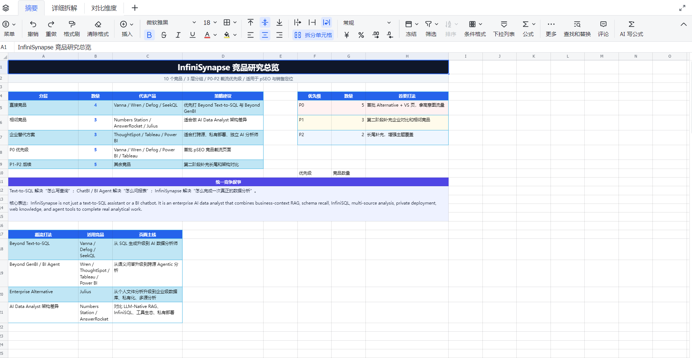
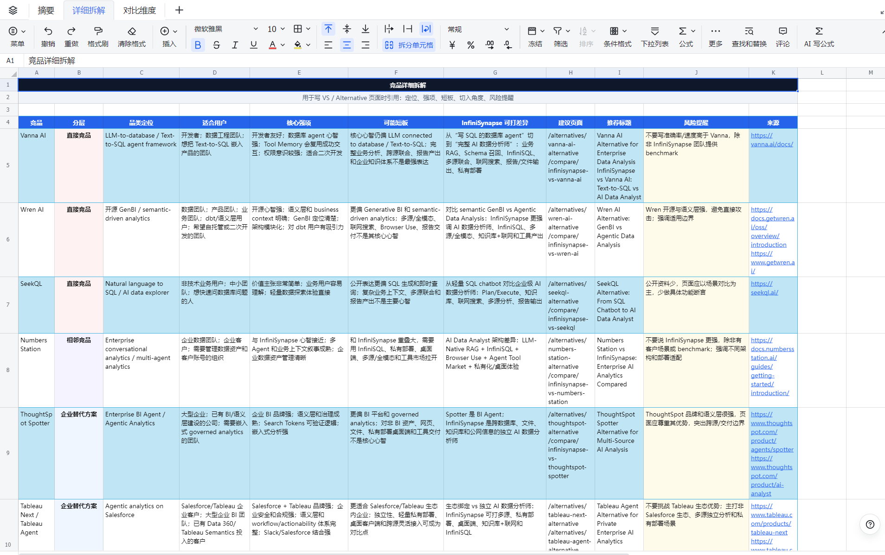
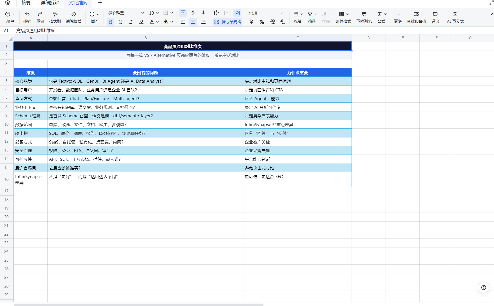
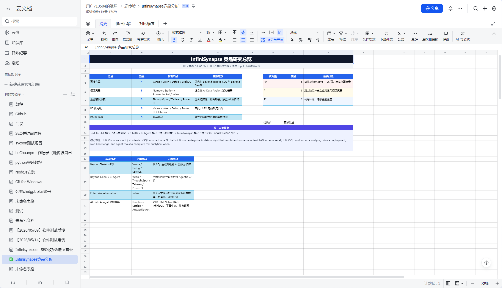
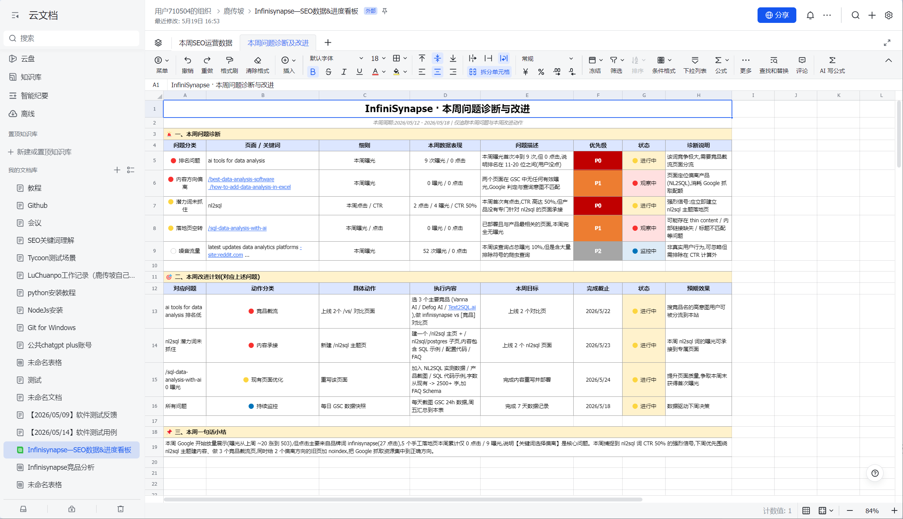
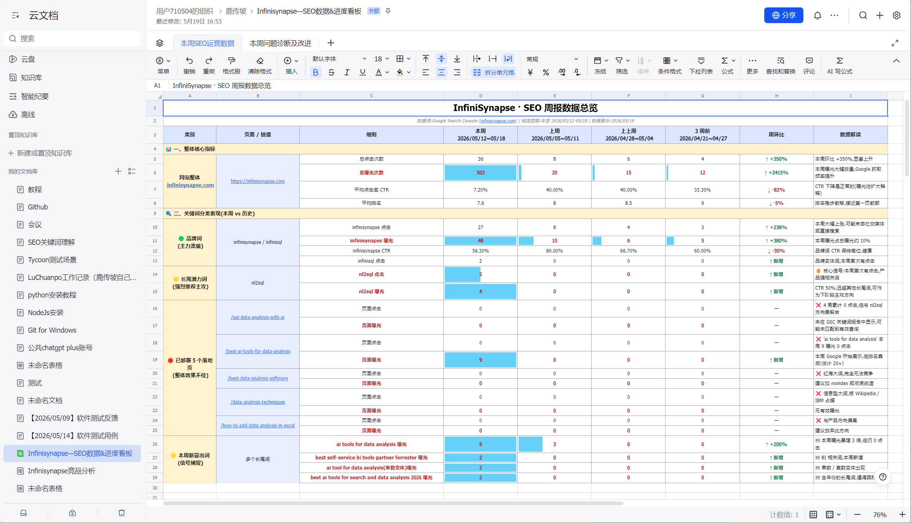

总览：
本教程是SEO的流程，等熟悉了这些，再去了解学习PSEO，PSEO策略库：https://seo-dashboard-plum.vercel.app/。本质上PSEO就是根据客户产品，发布大量的SEO页面，但是这个大量的页面是什么样的，就是根据PSEO策略去定。这里看不懂没关系，先往下看。
先学会AI工具的使用，claude code或者codex等，然后再上手。
新客户SEO步骤
1、了解客户、调研（1-2天，详细了解） 产出md文件
下面几个维度了解客户：可以试用客户的产品，多了解。可以将目前拥有的所有客户语料全部给ai去分析。
| 维度 | 需要了解什么 | 为什么重要 |
|---|---|---|
| 客户是谁 | 公司/个人做什么，属于什么行业，服务哪类客户 | 明确网站身份和 SEO 定位 |
| 核心业务 | 主要卖什么产品或服务，哪些主推，哪些辅助 | 决定优先做哪些 SEO 页面 |
| 核心卖点 | 为什么客户要选他，而不是选别人 | 用来写首页、服务页、落地页的核心文案 |
| 核心能力 | 真正擅长什么，如技术、交付、供应链、设计、售后 | 帮助页面建立专业度和信任感 |
| 不做什么 | 不服务哪些客户，不接哪些需求，不做哪些低价值业务 | 避免 SEO 吸引错误流量 |
| 目标客户画像 | 谁会买，职位、预算、痛点、决策周期是什么 | 决定页面语言和内容角度 |
| 客户痛点 | 用户为什么搜索，焦虑什么，怕什么，想解决什么 | 用来挖长尾词、FAQ 和问题型页面 |
| 使用场景 | 产品/服务在什么情况下被需要 | 适合扩展场景页和行业落地页 |
| 成功案例和证据 | 客户、项目、数据、评价、前后对比 | 增强页面可信度，提高转化率 |
| 地域和语言 | 服务哪些地区，是否需要多语言 | 决定是否做地区页、本地 SEO、多语言页 |
| 转化目标 | 希望用户询盘、预约、购买、注册、下载还是加联系方式 | 决定页面结构和 CTA 设计 |
通过以上维度了解清楚我们的客户之后，可以试用ai去生成一份客户产品的详细报告，最好是md文件，留着后面分析用
2、竞品分析（调研）！结果产出可以发给ai做竞品截流页面（1-2天）
产出md文件。另一个是表格
1. 明确目的
先问清楚这次竞品分析是为了什么：
产品定位？ 销售话术？ 功能规划？ SEO / pSEO？ 定价？
目的不同，重点不同。不要一上来就搜竞品。
2. 确定竞品分层
把竞品分成 3 类：
| 类型 | 含义 |
|---|---|
| 直接竞品 | 用户会直接拿来对比购买 |
| 间接竞品 | 解决相邻问题，可能抢预算 |
| 替代方案 | 用户现在用来完成同一任务的旧方法 |
每类选 2-4 个，总共控制在 5-10 个。
3. 收集资料
每个竞品优先看这几个地方：
官网首页 功能页 Pricing Docs / Help Center Case Study Blog / Changelog G2 / Reddit / Product Hunt 用户评价 Google 搜 [竞品] alternative / [竞品] vs
注意：官网和官方文档是事实来源，用户评论只能做参考。
4. 固定维度记录
每个竞品都按同一张表填：
竞品名称 官网 一句话定位 目标用户 核心场景 核心功能 部署方式 定价模式 核心强项 适用边界 用户好评 用户差评 我方切入角度 SEO / pSEO 页面机会 证据来源 优先级
不要每个竞品随便写，必须标准化。
5. 看三个关键问题
每个竞品重点回答这三个问题：
1. 它最适合谁？ 2. 它最强的地方是什么？ 3. 它不适合什么场景？
然后再回答：
我们应该从哪个角度切入？
这比单纯列功能更重要。
6. 做对比矩阵
用一张表横向对比：
功能 / 能力 我方 竞品 A 竞品 B 竞品 C 备注 证据来源
标记：
✅ 支持 ⚠️ 部分支持 ❌ 不支持 ？未知
不知道就写未知，不要猜。
7. 提炼销售话术
每个重点竞品写一句 battlecard：
[竞品] 更适合 [场景]，优势是 [强项]。 我们更适合 [场景]，因为 [差异化优势]。 如果你需要 [A]，可以选它； 如果你需要 [B]，我们更合适。
原则：承认对方强项，不要硬黑。
8. 提炼 SEO / pSEO 机会
每个竞品看看能不能做这些页面：
[竞品] alternative [我方] vs [竞品] best [品类] tools [竞品] self-hosted alternative [竞品] open-source alternative
给优先级：
P0：马上做 P1：后面做 P2：长尾补充
9. 标记证据等级
每条重要结论都要有来源。
| 等级 | 来源 |
|---|---|
| A | 官网 / 官方文档 |
| B | 官方博客 / GitHub / 新闻稿 |
| C | 用户评论 / 第三方评测 |
| D | 自己推断 |
对外只能放心用 A/B。 C 要谨慎，D 只能内部参考。
尤其这些不能乱写：
更快 更准 更安全 更便宜 支持更大规模 市场第一
除非有证据。
10. 最终交付物
一份合格竞品分析至少包含：
1. 竞品分层 2. 竞品总览表 3. 功能对比矩阵 4. 每个竞品的强项和边界 5. 我方切入角度 6. SEO / pSEO 页面机会 7. 证据来源 8. 下一步建议
一句话总结：
竞品分析不是证明我们更强，而是找清楚：谁在和我们抢用户、他们强在哪里、我们该从哪个场景赢。
竞品分析完成之后，可以做一份表格，详细的罗列出来信息，让ai做表格就行，结果类似，可以更加的丰富一些，根据客户产品情况自己去做表格。给老板汇报的时候要用这个。
https://jcnx6m5fia9c.feishu.cn/wiki/QTKEwKYFGi8rKVkFDGAcxwtZnjw?from=from_copylink



3、SEO页面写作（页面的色系一定要和客户官网匹配）
（1）初始阶段我们可以写什么类型的页面？
先做 30 -40个页面，不要一开始追求几百页。先让 Google 明白：这个网站是做什么的、擅长什么、服务哪些人。
| 页面类型 | 页面目的 | 内容重点 | 示例页面 / 关键词 | SEO价值 | 页面数量 |
|---|---|---|---|---|---|
| 首页 | 讲清楚客户是谁、提供什么服务、服务谁、解决什么问题 | 承接品牌词和核心业务词，建立用户第一印象 | 品牌名、公司主营服务、核心业务介绍 | 承接品牌搜索和核心业务流量 | 1 |
| 核心服务页 / 产品页 | 每个服务单独一个页面，不要全部塞在首页 | 一个页面瞄准一个明确关键词，详细介绍服务内容、适合人群、交付方式和优势 | SEO服务、Google Ads代投、Shopify建站、外贸网站建设 | 提升核心业务词排名，方便用户直接转化 | 3-5 |
| 行业 / 场景落地页 | 针对具体行业或使用场景做精准转化 | 根据不同行业痛点，写对应解决方案和服务价值 | 律师事务所网站建设、牙科诊所网站建设、SaaS官网建设、外贸B2B网站建设 | 关键词竞争更低，转化更精准，适合短期建站优先做 | 5-10 |
| 地区服务页 | 承接本地业务搜索流量 | 使用“地区 + 服务”的页面结构，突出本地服务能力 | 洛杉矶搬家公司、纽约会计服务、深圳企业网站建设 | 适合本地业务获客，搜索意图强 | 5-10 |
| 问题型长尾文章 | 回答用户已经在搜索的问题 | 围绕价格、流程、工具选择、收录时间等问题写文章，并做内链到服务页 | 做一个外贸网站需要多少钱、Shopify 和 WordPress 哪个适合独立站、新网站多久能被 Google 收录 | 容易被 Google 收录，也能通过内链给服务页传权重 | 10 |
| 对比型页面 | 承接有商业意图、正在做决策的用户 | 对比不同方案的优劣、适用场景、成本和转化建议 | WordPress vs Shopify、SEO vs Google Ads、自己建站 vs 找建站公司 | 离转化更近，适合引导用户选择服务 | 5-10 |
| 案例页 | 展示真实成果，增强信任感 | 说明客户背景、问题、解决方案、执行过程和最终结果 | 客户案例、行业案例、项目复盘、建站案例、SEO增长案例 | 天然有信任感，可承接行业词、问题词和品牌词 | 3-5 |
（2）开始页面的制作（步骤1-8）
附:全流程速览
步骤 1 了解客户官网或产品
↓
步骤 2 生成核心关键词 + 长尾关键词
↓
步骤 3 关键词验证与竞争分析(KGR)
↓
步骤 4 页面写作规范(关键词清单 → Head → 骨架 → 正文 → 图片 → 链接 → Schema → 移动端 → 自查)
↓
步骤 5 使用页面写作 skill 辅助产出
↓
步骤 6 AI 自查 10 项 SEO 维度
↓
步骤 7 交付 + 客户部署 + sitemap.xml + robots.txt
↓
步骤 8 上线后用 QuickCreator Chrome 扩展做最终检测
步骤 1：了解客户官网或产品（上面一开始已经调研过了）
从以下维度系统了解产品或服务:
- 作用(Purpose):产品主要解决什么问题或实现什么目标。
- 功能(Features):核心功能、附加功能或技术特性。
- 使用场景(Use Cases):产品适用的具体场景或行业。
- 目标用户(Target Audience):主要用户群体或决策人。
- 解决痛点(Pain Points):用户面临的问题,产品如何解决。
- 优势(Competitive Advantages):与同类产品相比的差异化亮点。
提示:分析时可整理成表格,每个维度对应具体描述,方便后续关键词生成。
步骤 2:生成核心关键词与长尾关键词
- 生成核心关键词(Core Keywords) - 基于产品功能、场景和用户痛点,提炼 n 个核心关键词(数量不限,初期尽量多)。 - 核心关键词可对应网站的页面标题或 H1 标签。
- 生成长尾关键词(Long-tail Keywords)
- 每个核心关键词生成 m 个长尾关键词(结合功能、场景、目标用户)。
- 布局建议:
- 核心关键词:页面中出现 8–10 次,用于 Title、H1、正文。
- 长尾关键词:页面中出现 6–8 次,用于 H2、H3、FAQ、正文段落。
示例: 核心关键词:AI 自然语言分析平台 长尾关键词:企业客户反馈 AI 分析、SQL 数据库文本分析、多语言自动化分析工具
步骤 3:关键词验证与竞争分析(KGR 法)
- 收集数据
- 使用 DataForSEO 查询关键词搜索量(search_volume)。
- 使用 SEMrush 或 Google 搜索
allintitle:查询页面数量(allintitle_count)。 - 计算 KGR(Keyword Golden Ratio)
\text{KGR} = \frac{\text{allintitle_count}}{\text{search_volume}}
- 判断竞争度
| KGR 值 | 竞争度 | 上首页周期(参考新站) |
|---|---|---|
| < 0.25 | 🟢 黄金词 | 1–2 个月 |
| 0.25–1.0 | 🟡 中等竞争 | 3–6 个月 |
| > 1.0 | 🔴 高竞争 | 短期不优先 |
建议:优先选择 KGR 小的关键词,越小竞争越低,越容易快速获取排名。
步骤 4:页面写作规范
本步骤把"一个 SEO 页面应该怎么写"拆成 8 个子规范,按 4.1 → 4.8 顺序执行。
4.1 写作前:确定本篇文章的关键词清单
在开始写之前,先填好这张表:
主词(核心攻打的词):___________________
搜索量:______ KGR:______
次要词 1:___________________
次要词 2:___________________
次要词 3:___________________
4.2 写 HTML Head 区域
Head 区域是用户看不见但搜索引擎最先读取的地方。这里填错了,排名就废了一半。
4.2.1 Title(页面标题)
这是搜索结果里蓝色那行大字,也是浏览器标签的名称。
规则:
- ✅ 长度:60 个字符以内(超出会被截断)
- ✅ 主词必须完整连续出现,放在靠前位置
- ✅ 加上品牌名(放在末尾)
- ✅ 加上年份(可选,提升时效感)
<title>How to Add Data Analysis in Excel (2026 Guide) | YourBrand</title>
反例:
<!-- ❌ 太长、主词被截断 -->
<title>The Complete and Ultimate Step by Step Guide to Adding the Data Analysis ToolPak in Microsoft Excel for Beginners</title>
<!-- ❌ 没有主词 -->
<title>Excel Tutorial | YourBrand</title>
4.2.2 Meta Description(页面描述)
这是搜索结果里标题下面那段灰色小字。它不直接影响排名,但影响用户要不要点进来。
规则:
- ✅ 长度:155 个字符以内(超出被截断)
- ✅ 主词出现 1 次
- ✅ 包含 1–2 个次要词
- ✅ 要有"钩子",让用户想点击(说清楚文章能帮他解决什么)
<meta name="description" content="Learn how to add data analysis in Excel using the built-in ToolPak. Plus: when an Excel data analysis tool isn't enough and what to use instead.">
4.2.3 Canonical(规范链接)
告诉搜索引擎"这个页面的官方地址是这个",防止重复内容惩罚。
规则:
- ✅ 必须是这个页面的完整绝对 URL
- ✅ 协议用
https - ✅ 与浏览器地址栏显示的 URL 完全一致,不多不少
<link rel="canonical" href="https://yoursite.com/how-to-add-data-analysis-in-excel">
常见错误:
<!-- ❌ 用了 http -->
<link rel="canonical" href="http://yoursite.com/...">
<!-- ❌ URL 末尾斜杠不一致(真实页面没有斜杠但这里有) -->
<link rel="canonical" href="https://yoursite.com/how-to-add-data-analysis-in-excel/">
4.2.4 Robots(告诉搜索引擎能不能收录)
<!-- 正常文章页:允许收录、允许跟踪链接 -->
<meta name="robots" content="index, follow">
<!-- 不想被收录的页面(如内部测试页)才用这个 -->
<meta name="robots" content="noindex, nofollow">
4.2.5 OG 标签(社交分享预览)
⚠️ 注意:目前所有页面共用一张 OG 图(
https://yoursite.com/og.png),必须部署在客户网站的根目录,确保打开链接能够看到图片。
当有人把你的链接分享到 Twitter、LinkedIn、微信时,OG 标签控制预览卡片长什么样。
<!-- 文章页固定写 article -->
<meta property="og:type" content="article">
<!-- 与 <title> 保持一致 -->
<meta property="og:title" content="How to Add Data Analysis in Excel | YourBrand">
<!-- 与 meta description 保持一致 -->
<meta property="og:description" content="Learn how to add data analysis in Excel using the built-in ToolPak...">
<!-- 必须是这个页面的完整 URL,与 canonical 一致 -->
<meta property="og:url" content="https://yoursite.com/how-to-add-data-analysis-in-excel">
<!-- 所有页面共用同一张 OG 图,放在网站根目录 -->
<meta property="og:image" content="https://yoursite.com/og.png">
4.2.6 Twitter Card 标签
<!-- summary_large_image = 显示大图卡片,SEO 文章统一用这个 -->
<meta name="twitter:card" content="summary_large_image">
<!-- 你的 Twitter 账号(带@) -->
<meta name="twitter:site" content="@YourTwitterHandle">
<!-- 与 og:image 用同一张图(全站共用) -->
<meta name="twitter:image" content="https://yoursite.com/og.png">
4.2.7 Viewport(移动端适配,必须有)
<meta name="viewport" content="width=device-width, initial-scale=1.0">
没有这行,手机上看到的就是缩小版的 PC 页面,Google 会降权。
4.2.8 完整 Head 模板
把上面所有内容合在一起,每个新页面照这个改:
<head>
<meta charset="UTF-8">
<meta name="viewport" content="width=device-width, initial-scale=1.0">
<title>你的 Title(≤60字符)| 品牌名</title>
<meta name="description" content="你的 Description(≤155字符)">
<meta name="robots" content="index, follow">
<meta property="og:type" content="article">
<meta property="og:title" content="你的 Title | 品牌名">
<meta property="og:description" content="你的 Description">
<meta property="og:url" content="https://yoursite.com/页面slug">
<meta property="og:image" content="https://yoursite.com/og.png">
<meta name="twitter:card" content="summary_large_image">
<meta name="twitter:site" content="@你的Twitter">
<meta name="twitter:image" content="https://yoursite.com/og.png">
<link rel="canonical" href="https://yoursite.com/页面slug">
</head>
4.3 页面内容结构(骨架)
一篇 SEO 文章的骨架是固定的,掌握这个骨架,内容往里填就行。
4.3.1 标准页面骨架
导航栏
└─ Logo(链接到首页)
└─ 主导航链接(首页、产品、文档、博客等)
└─ CTA 按钮(注册 / 免费试用)
正文
├─ 面包屑导航(首页 > 博客 > 当前页标题)
├─ H1 标题
├─ 引导段落(150字以内,概括文章核心价值)
├─ TL;DR 核心要点框(3–5 条,让懒得读全文的人也能获益)
├─ 目录(H2 超过 5 个时必须有)
├─ 正文内容(见 4.4)
├─ 相关阅读(内链到其他页面)
├─ FAQ 常见问题
└─ CTA(号召行动按钮)
页脚
└─ 分类链接、法律声明、版权信息
4.3.2 H 标签层级规则
H 标签(H1–H6)告诉搜索引擎文章的大纲结构,必须按层级使用,不能跳级。
H1:文章总标题(全页只能有 1 个)
H2:第一个大章节
H3:章节下的小节
H4:更细的分项(按需使用)
H2:第二个大章节
H3:小节
H2:第三个大章节
常见错误:
H1 → H3(跳过了 H2)❌
H2 → H2 → H2 → H2(没有 H3,结构太扁平)⚠️
全页两个 H1 ❌
4.4 正文内容
4.4.1 关键词要出现在哪里
主词必须出现在以下 7 个位置(少一个都会影响排名):
| 位置 | 要求 |
|---|---|
| URL slug | 包含主词,用连字符 - 分隔单词 |
<title> |
主词完整连续,60 字符内 |
<meta description> |
主词出现 1 次,155 字符内 |
<h1> |
主词完整连续,全页唯一 |
| 正文第一段前 100 字 | 主词自然出现 1 次 |
2–3 个 <h2> 标题 |
主词或次要词出现其中 |
| 正文全文 | 主词 5–10 次,次要词各 2–3 次 |
关键词密度:2–3%(每 100 个词里,主词出现约 2–3 次)
不要过度堆砌关键词,读起来像机器人在说话,Google 会降权:
❌ "Our Excel data analysis tool is the best Excel data analysis
tool for Excel data analysis needs in Excel."
4.4.2 第一段怎么写
第一段是用户进来最先读到的内容,也是搜索引擎判断相关性的重要区域。
格式:
- 第一句直接点题(让用户知道来对地方了)
- 说清楚这篇文章能帮他解决什么
- 自然带入主词
- 100–150 字即可,不要废话
示例:
If you're looking to add data analysis capabilities in Excel, the fastest path is the built-in Data Analysis ToolPak — a free add-in that ships with every copy of Excel. In this guide you'll learn how to enable it in under two minutes, run your first descriptive statistics and regression, and understand when this Excel data analysis tool hits its limits.
4.4.3 正文各段落规范
- 每段 3–5 行,不要写整页不换段的大段文字
- 用
<ul>/<ol>列表拆开步骤、注意事项 - 至少 1 个对比表格(对比多个选项、对比前后差异等)
- 重要信息用
<strong>加粗,但不要满篇都是加粗 - 用小提示框、警告框区分普通文字和注意事项
4.4.4 文章长度参考
| 页面类型 | 建议字数 |
|---|---|
| How-to 教程型 | 1,500–2,000 字 |
| 工具对比 / 评测型 | 1,800–2,500 字 |
| 信息型(什么是 X) | 2,500–3,500 字 |
| 工具列表型 | 2,000–2,500 字 |
字数不是越多越好,多余的废话会降低用户体验,导致跳出率高,反而影响排名。
4.4.5 FAQ 怎么写
FAQ 要回答用户真实会搜的问题,标题就是问题句,不要用"问题一"这种写法。
好的 FAQ 标题:
- How to add data analysis in Excel step by step?
- Why is the Data Analysis option not showing in Excel?
- Is the Data Analysis ToolPak free?
每个 FAQ 答案:50–150 字,直接回答,不要绕。FAQ 至少 4–5 条。
4.5 图片处理
图片是 SEO 常被忽视的得分项,处理好了既帮排名又帮用户体验。
4.5.1 正文截图规范
一篇文章至少 3 张截图(没有图的文章用户信任度低)。
| 要素 | 规范 |
|---|---|
| 数量 | 每篇至少 3 张 |
| 格式 | PNG(截图)、WebP(压缩后) |
| 尺寸 | 建议 1200×700px(宽幅,适配大多数布局) |
| 文件大小 | 压缩到 200KB 以内(用 Squoosh 或 TinyPNG) |
| 文件命名 | 用关键词命名,如 excel-data-analysis-toolpak-enable.png,不要用 image001.png |
4.5.2 alt 属性(最重要)
alt 属性是搜索引擎"读取"图片内容的唯一方式,必须填,且要描述图片内容(含关键词,自然融入)。
<!-- ✅ 好的 alt -->
<img
src="excel-data-analysis-enable.png"
alt="Excel Options dialog showing how to enable the Data Analysis ToolPak add-in"
width="1200"
height="700"
loading="lazy"
>
<!-- ❌ 坏的 alt -->
<img src="img001.png" alt="image">
<img src="img001.png" alt=""> <!-- 空的也不行 -->
<img src="img001.png" alt="excel excel data analysis excel toolpak excel tutorial"> <!-- 关键词堆砌 -->
4.5.3 width / height 属性
必须写,防止页面加载时图片位置跳动(Google 的 CLS 指标,影响排名)。
<img src="..." alt="..." width="1200" height="700">
4.5.4 loading="lazy"
除了第一屏的图片,其余全部加 loading="lazy",加快页面加载速度。
<!-- 首屏图(Hero图)不加 lazy,让它立刻加载 -->
<img src="hero.png" alt="..." width="..." height="...">
<!-- 正文中的图全部加 lazy -->
<img src="step1.png" alt="..." width="..." height="..." loading="lazy">
4.5.5 OG 封面图(社交分享图)
目前所有页面共用一张 OG 图(后续可按需为重点页面单独制作)。
- 尺寸:1200×630px(Open Graph 标准)
- 格式:PNG
- 内容:品牌名 + Logo + 品牌主色调背景(因为多页面共用,内容做通用化,不放具体页面标题)
- 命名:统一叫
og.png - 部署位置:网站根目录
/og.png(所有页面 Head 里都引用同一个 URL) - 必须上传到服务器并确认 URL 可访问
4.6 链接设置
链接是 SEO 里最容易出问题的地方。一个 404 链接不只影响用户体验,还会影响 Google 对整个站点的评分。
4.6.1 链接的种类
| 类型 | 说明 | 示例 |
|---|---|---|
| 外链(出站) | 链接到其他网站 | 链到 Wikipedia、官方文档 |
| 内链(站内) | 链接到本站其他页面 | 链到博客其他文章 |
| 页面锚点 | 链接到本页某个位置 | #faq |
| CTA 链接 | 注册、试用、购买等行动按钮 | 链到注册页 |
4.6.2 所有链接上线前必须验证可访问
这是最重要的一条规范。每一个链接,包括 Head 里的 og:image、canonical、Schema 里的 URL,都必须真实存在、返回 HTTP 200。
怎么验证:
方法一:手动一个个点,确认页面正常打开。
方法二:用 Chrome 插件 Check My Links,一键扫描整页所有链接。
方法三:命令行批量验证(适合技术同学):
curl -o /dev/null -s -w "%{http_code} %{url_effective}\n" https://yoursite.com/page-slug
返回 200 = 正常,404 = 页面不存在,500 = 服务器错误。
常见需要验证的链接清单:
页面内容里的链接
✅ 导航栏所有链接(首页、产品页、文档页、博客页、注册页)
✅ 正文内链(链到本站其他页面)
✅ 外链(链到第三方网站,确认对方页面还在)
✅ CTA 按钮链接(注册/试用页)
✅ 页脚所有链接
✅ 相关文章推荐链接
Head 里的 URL
✅ og:url(与 canonical 一致,且页面真实存在)
✅ og:image(全站共用的 /og.png 真实存在,可以直接打开)
✅ twitter:image(同上)
✅ canonical href(与浏览器地址栏完全一致)
Schema JSON 里的 URL
✅ Organization.url(官网首页)
✅ Organization.logo(Logo 图片 URL)
✅ BreadcrumbList 每一层的 item URL
✅ Article.image(OG 图片 URL)
✅ Article.mainEntityOfPage @id(当前页 URL)
4.6.3 内链怎么写
每篇文章至少链到本站其他 2 篇文章。
锚文本(链接的文字)规则:
- ✅ 用自然语言短语,包含目标页的关键词
- ❌ 不要用"点击这里"、"了解更多"这种没有意义的文字
<!-- ✅ 好的内链写法 -->
<p>
If you're ready to go beyond Excel, check out our guide to
<a href="/best-ai-tools-for-data-analysis">best AI tools for data analysis</a>.
</p>
<!-- ❌ 坏的内链写法 -->
<p>
Want to know more? <a href="/best-ai-tools-for-data-analysis">click here</a>.
</p>
内链用相对路径还是绝对路径?
推荐用相对路径,这样无论客户最终把页面部署在主域名、子域名还是子目录下都能正确跳转(详见步骤 7 的部署说明)。
<!-- 相对路径(推荐,跨部署方式都能用) -->
<a href="/best-ai-tools-for-data-analysis">best AI tools for data analysis</a>
<!-- 绝对路径(只在确定最终域名时使用) -->
<a href="https://yoursite.com/best-ai-tools-for-data-analysis">...</a>
4.6.4 外链规范
链到其他网站时:
- 链到权威来源(Wikipedia、官方文档、知名媒体),对排名有正向信号
- 链到竞品时谨慎(除非是对比文章,必须提到)
- 不确定目标站点是否可靠时,加
rel="nofollow"
<a href="https://support.microsoft.com/..." rel="noopener noreferrer">Microsoft 官方文档</a>
4.7 Schema 结构化数据
Schema 是一段写在 <head> 里的 JSON 代码,帮助 Google 理解页面的语义,可以触发搜索结果里的"富媒体摘要"(Rich Results)——比如 FAQ 折叠展示、教程步骤、面包屑等。
所有代码放在 <script type="application/ld+json"> 标签里。
4.7.1 所有页面都要加的 Schema(必须)
① Organization(告诉 Google 这个网站是谁)
{
"@context": "https://schema.org",
"@type": "Organization",
"name": "你的品牌名",
"url": "https://yoursite.com",
"logo": "https://yoursite.com/logo.png",
"sameAs": [
"https://twitter.com/你的账号",
"https://linkedin.com/company/你的公司"
]
}
⚠️
logo和url必须是真实存在、可以访问的 URL
② BreadcrumbList(面包屑导航)
{
"@context": "https://schema.org",
"@type": "BreadcrumbList",
"itemListElement": [
{
"@type": "ListItem",
"position": 1,
"name": "Home",
"item": "https://yoursite.com/"
},
{
"@type": "ListItem",
"position": 2,
"name": "Blog",
"item": "https://yoursite.com/blog"
},
{
"@type": "ListItem",
"position": 3,
"name": "当前页面标题",
"item": "https://yoursite.com/当前页slug"
}
]
}
③ Article(文章信息)
{
"@context": "https://schema.org",
"@type": "Article",
"headline": "与 H1 一致的标题",
"description": "与 meta description 一致",
"image": ["https://yoursite.com/og.png"],
"datePublished": "2026-01-15",
"dateModified": "2026-01-15",
"publisher": {
"@type": "Organization",
"name": "你的品牌名",
"logo": {
"@type": "ImageObject",
"url": "https://yoursite.com/logo.png"
}
},
"mainEntityOfPage": {
"@type": "WebPage",
"@id": "https://yoursite.com/当前页slug"
}
}
4.7.2 按页面类型选加的 Schema
教程 / How-to 页:加 HowTo
{
"@context": "https://schema.org",
"@type": "HowTo",
"name": "How to [做什么]",
"description": "简短描述",
"totalTime": "PT10M",
"step": [
{
"@type": "HowToStep",
"position": 1,
"name": "步骤标题",
"text": "步骤详情,用纯文字,不要包含 HTML 标签"
},
{
"@type": "HowToStep",
"position": 2,
"name": "第二步标题",
"text": "第二步详情"
}
]
}
含 FAQ 区块的页面:加 FAQPage
{
"@context": "https://schema.org",
"@type": "FAQPage",
"mainEntity": [
{
"@type": "Question",
"name": "FAQ 问题标题?",
"acceptedAnswer": {
"@type": "Answer",
"text": "答案内容,纯文本,不含 HTML 标签"
}
},
{
"@type": "Question",
"name": "第二个问题?",
"acceptedAnswer": {
"@type": "Answer",
"text": "第二个答案"
}
}
]
}
⚠️ Schema 里
name和text的内容要与页面上实际显示的一致,不能写页面上没有的内容
4.7.3 Schema 写完怎么验证
用 Google 官方工具:https://search.google.com/test/rich-results
粘贴页面 URL 或直接粘贴代码,看有没有报错。有红色错误必须修复,黄色警告尽量修复。
4.8 移动端检查
Google 现在以移动端版本为准来排名(Mobile-First Indexing),手机上显示不好直接影响排名。
4.8.1 最基础的移动端要求
1. Viewport Meta 标签必须有:
<meta name="viewport" content="width=device-width, initial-scale=1.0">
2. 字体在手机上可以正常阅读:
- 正文字体不小于 16px
- 行高不小于 1.5
3. 按钮和链接手指可以点到:
- 可点击区域至少 44×44px
- 相邻两个链接之间留足间距
4. 表格在手机上不溢出屏幕:
/* 表格超出时允许横向滚动 */
.table-wrapper {
overflow-x: auto;
}
5. 图片不超出屏幕宽度:
img {
max-width: 100%;
height: auto;
}
4.8.2 怎么测试移动端
方法一:Chrome 浏览器 → F12 → 点击手机图标,切换到移动端模拟
方法二:用 Google 官方工具:https://search.google.com/test/mobile-friendly
4.9 发布前终极自查清单
每篇文章发布前,把这个清单过一遍,全部打勾才能发布。
🔤 关键词
- 已确定主词 + 至少 2 个次要词
- 主词出现在 URL slug
- 主词出现在
<title>,且 title ≤ 60 字符 - 主词出现在
<meta description>,且 description ≤ 155 字符 - 主词出现在
<h1>,且全页只有 1 个<h1> - 主词出现在正文前 100 字
- 主词出现在至少 2 个
<h2>里 - 正文主词出现 5–10 次,关键词密度约 2–3%
- 次要词各出现 2–3 次
📄 Head 区域
<title>已填写,≤ 60 字符<meta description>已填写,≤ 155 字符<meta name="robots" content="index, follow">已添加<link rel="canonical">已添加,URL 与浏览器地址栏完全一致<meta name="viewport">已添加og:title/og:description/og:url/og:image均已填写twitter:card/twitter:image已填写
🔗 链接验证
- 导航栏所有链接已验证可访问(手动点击或用工具扫描)
- 正文所有内链已验证目标页面存在
- 正文所有外链已验证目标页面存在
- 页脚所有链接已验证可访问
- CTA 按钮链接已验证可访问
og:imageURL 已验证图片存在(直接在浏览器地址栏打开 URL)canonicalURL 正确- Schema 中所有 URL 已验证
🖼️ 图片
- 正文至少 3 张截图
- 所有图片有
alt属性(含关键词,自然描述) - 所有图片有
width和height属性 - 非首屏图片有
loading="lazy" - 图片文件已压缩,单张 < 200KB
- 全站共用的 OG 封面图已上传,URL 可访问(1200×630px)
📋 Schema
- Organization Schema 已添加
- BreadcrumbList Schema 已添加,每层 URL 可访问
- Article Schema 已添加,
datePublished为实际发布日期 - 教程页已添加 HowTo Schema
- 含 FAQ 的页面已添加 FAQPage Schema
- 用 Google Rich Results Test 验证,无红色错误
📝 内容
- H 标签没有跳级(H1 → H2 → H3 按顺序)
- 文章字数符合该类型的建议范围
- 至少 1 个对比表格
- FAQ 至少 4–5 条,标题为问句格式
- 至少链到本站其他 2 篇文章(内链)
- 文末有 CTA 按钮
- 移动端显示正常(Chrome DevTools 验证)
步骤 5:页面写作 skill(辅助工具)
下载链接:https://github.com/LuChuanPo/seo-page-writer.git
使用步骤很简单,可以看 Github 上的 readme。
也可以生成一个类似的表格结构,发给安装好这个 skill 的 Claude Code。下面是示例数据,根据具体的页面更改:
| 页面 URL | /sql-data-analysis-with-ai |
|---|---|
| 字段 | 内容 |
| 产品介绍 | InfiniSynapse 产品介绍 / 产品定位 / 核心内容:xxxx 等大概 500 字 |
| Meta Title | SQL Data Analysis with AI: From Question to Insight (2026) |
| H1 | SQL Data Analysis with AI: From Question to Insight in Seconds |
| Meta Description | Modern SQL data analysis powered by AI agents. See how data analysis using SQL evolved from manual queries to AI that understands your schema and business metrics. |
| 核心主词 | sql data analysis (8,100, KGR 0.024) 🟢 极致黄金 |
| 次要词 | data analysis using sql (8,100, KGR 0.024) 🟢 极致黄金 |
| KGR 状态 | 🟢🟢🟢 这是 InfiniSynapse 首批 SEO 的命脉,最高资源投入 |
| 文章长度 | 2,200–2,800 字 |
| 主词在哪些位置 | URL、Meta Title、H1、Meta Description、第一段、4 个 H2、正文 8–10 次 |
| 次要词分布 | data analysis using sql 用作 1 个 H2,正文 4–5 次 |
| 内嵌 Try-it 工具 | ✅ 必做。嵌入"自然语言 → SQL 生成"现场 demo,用户输入 "top customers by revenue last quarter" 返回 SQL + 真实结果 |
| 在合适位置添加实例图片 | 图片 url 当前目录 page2.1.png,page2.2.png,page2.3.png |
| 内链 | 链到页面 1(/best-ai-tools-for-data-analysis)、页面 3(/data-analysis-techniques)、页面 4(/best-data-analysis-software) |
步骤 6:页面检测(发布前 AI 自查)
按照下面的维度让 AI 去看看页面符不符合标准:
| SEO 检测维度 | 检查内容 / 标准说明 |
|---|---|
| Meta Title | 标题长度最佳(40-60 个字符) |
| Meta Description | 描述长度最佳(150-160 个字符) |
| Canonical URL | 规范 URL 设置正确 |
| H1 Tag | 页面有一个 H1 标签,符合预期 |
| H2 Tag | 页面有 H2 标签来构建内容结构 |
| H3 Tag | 页面有 H3 标签来增强内容结构 |
| Social Media Meta Tags | 社交媒体元标签存在 |
| Images | 所有图片都有 ALT 文本,增强 SEO 和可访问性 |
| Internal Links | 页面有内部链接,支持网站结构 |
| External Links | 页面有外部链接,增强内容价值 |
用quick
步骤 7:页面上线(交付与部署)
7.1 交付物的目录结构
我们交付给客户的是一个静态资源压缩包(.zip)。解压后是一组按页面 slug 组织的目录,每个目录包含该页面的所有相关资源。
标准目录结构示例:
seo-pages/
├── sql-data-analysis-with-ai/ # 页面 1 的目录,目录名 = URL slug
│ ├── index.html # 页面正文(打开这个目录时默认加载)
│ └── images/ # 该页面用到的所有正文截图
│ ├── page2.1.png
│ ├── page2.2.png
│ └── page2.3.png
│
├── best-ai-tools-for-data-analysis/ # 页面 2 的目录
│ ├── index.html
│ └── images/
│ └── ...
│
├── data-analysis-techniques/ # 页面 3 的目录
│ ├── index.html
│ └── images/
│
├── og.png # 全站共用的 OG 社交分享图(1200×630px)
├── sitemap.xml # 全站点地图(根据客户域名生成,见 7.4)
├── robots.txt # 爬虫规则文件(见 7.5)
└── README.md # 给客户运维看的部署说明
关键点:
- 每个页面单独一个文件夹,文件夹名 = URL 的最后一段 slug。
- 文件夹里 HTML 必须命名为
index.html,这样访问/sql-data-analysis-with-ai/时服务器会自动加载它,URL 末尾不需要带.html,更符合 SEO 习惯。 - 图片资源放在该页面文件夹的
images/子目录里,HTML 用相对路径引用:<img src="images/page2.1.png">。 - OG 图片全站共用一张,统一命名为
og.png,放在压缩包根目录,客户部署时上传到网站根目录。所有页面 Head 里都引用https://客户域名/og.png这一个 URL。后续如有重点页面需要单独的 OG 图,再按og/[页面slug].png的命名规则补充。 sitemap.xml和robots.txt放在压缩包根目录,客户部署到网站根目录即可。
7.2 三种部署方式与对应的最终 URL
客户可以选择以下任意一种部署方式,我们的页面都能正常工作(因为我们已经把所有内链、图片都做成了相对路径)。
| 部署方式 | 客户操作 | 最终页面 URL 示例 |
|---|---|---|
| 主域名根目录 | 把每个页面文件夹直接放在网站根目录 | https://infinisynapse.com/sql-data-analysis-with-ai/ |
| 子目录 | 把所有页面文件夹放在网站根目录下的一个父目录里(如 /blog/) |
https://infinisynapse.com/blog/sql-data-analysis-with-ai/ |
| 子域名 | 单独开一个子域名(如 learn.infinisynapse.com),把页面放在该子域名根目录 |
https://learn.infinisynapse.com/sql-data-analysis-with-ai/ |
💡 三种方式 SEO 权重对比:
- 主域名根目录 ≈ 子目录 > 子域名(子域名会被 Google 视为相对独立的站点,权重传递较弱)
- 如果客户主站权重较高,推荐使用子目录方式(
/blog/xxx),最大化权重继承。
7.3 如何让客户部署页面
把压缩包发给客户后,附上以下部署说明(可以直接复制下面这段给客户):
部署说明(给客户运维)
- 解压压缩包:得到
seo-pages/目录。- 选择部署位置:决定页面挂在主域名根目录、子目录还是子域名(参考上面 7.2 的对比表)。
- 上传文件: - 使用 FTP / SFTP / SCP / 云存储控制台,把
seo-pages/里所有的页面文件夹(如sql-data-analysis-with-ai/、best-ai-tools-for-data-analysis/等)上传到所选位置。 - 把sitemap.xml、robots.txt和og.png上传到网站根目录(og.png是全站共用的社交分享图,所有页面的 Head 标签都会引用它,所以必须放根目录)。- 服务器配置:确保 Web 服务器(Nginx / Apache / CDN)的目录默认文档设置包含
index.html(99% 默认就是)。- 验证部署: - 在浏览器打开任一页面 URL,确认正文、图片、样式都正常显示。 - 打开
https://你的域名/sitemap.xml,确认能直接看到 XML 内容(不是 404)。 - 打开https://你的域名/robots.txt,确认能直接看到文本内容。- 提交到 Google Search Console(可选但推荐): - 登录 Google Search Console - 在"站点地图"功能里提交
https://你的域名/sitemap.xml- 这样 Google 会更快地发现并收录新页面。
7.4 sitemap.xml 怎么写
sitemap.xml 告诉搜索引擎"我这个站有哪些页面、它们的重要性、更新频率",是 Google 发现新页面最快的方式。
关键规则:
- 文件名必须是
sitemap.xml,放在网站根目录 <loc>里的 URL 必须是完整绝对 URL,使用客户实际部署后的域名- 末尾斜杠要和实际页面 URL 保持一致(我们的页面都是带末尾斜杠的目录形式,所以
<loc>也要带/) - 编码使用 UTF-8
模板(以客户部署到 https://infinisynapse.com 主域名根目录为例):
<?xml version="1.0" encoding="UTF-8"?>
<urlset xmlns="http://www.sitemaps.org/schemas/sitemap/0.9">
<url>
<loc>https://infinisynapse.com/sql-data-analysis-with-ai/</loc>
<lastmod>2026-01-15</lastmod>
<changefreq>monthly</changefreq>
<priority>1.0</priority>
</url>
<url>
<loc>https://infinisynapse.com/best-ai-tools-for-data-analysis/</loc>
<lastmod>2026-01-15</lastmod>
<changefreq>monthly</changefreq>
<priority>0.8</priority>
</url>
<url>
<loc>https://infinisynapse.com/data-analysis-techniques/</loc>
<lastmod>2026-01-15</lastmod>
<changefreq>monthly</changefreq>
<priority>0.8</priority>
</url>
</urlset>
根据不同部署方式调整 <loc> 的写法:
| 部署方式 | <loc> 示例 |
|---|---|
| 主域名根目录 | https://infinisynapse.com/sql-data-analysis-with-ai/ |
子目录(/blog/) |
https://infinisynapse.com/blog/sql-data-analysis-with-ai/ |
| 子域名 | https://learn.infinisynapse.com/sql-data-analysis-with-ai/ |
字段含义:
<lastmod>:最后修改日期,格式YYYY-MM-DD,跟着实际页面更新的日期改<changefreq>:更新频率,可选always/hourly/daily/weekly/monthly/yearly/never,SEO 文章一般填monthly<priority>:相对优先级,0.0–1.0,最重要的核心页面填1.0,普通页面填0.5–0.8
验证方法:
部署后用浏览器直接打开 https://你的域名/sitemap.xml,确保能看到 XML 文本内容。然后到 Google Search Console → 站点地图 → 提交 sitemap URL,几分钟后看状态是否为"成功"。
7.5 robots.txt 怎么写
robots.txt 告诉爬虫"哪些目录可以爬、哪些不能爬",必须放在网站根目录(https://你的域名/robots.txt)。
标准模板(适合大多数 SEO 页面场景):
User-agent: *
Allow: /
Sitemap: https://infinisynapse.com/sitemap.xml
字段含义:
User-agent: *:对所有搜索引擎爬虫生效(*是通配符)Allow: /:允许爬取整个网站Sitemap::告诉爬虫站点地图在哪里,这一行必须用完整绝对 URL
如果客户有些目录不希望被爬取(例如后台、测试页),用 Disallow:
User-agent: *
Allow: /
Disallow: /admin/
Disallow: /test/
Disallow: /private/
Sitemap: https://infinisynapse.com/sitemap.xml
根据不同部署方式调整 Sitemap 行:
| 部署方式 | Sitemap: 行 |
|---|---|
| 主域名根目录 | Sitemap: https://infinisynapse.com/sitemap.xml |
子目录(/blog/) |
Sitemap: https://infinisynapse.com/sitemap.xml(robots.txt 总是放主域名根目录,不会因为页面挂在子目录而改变) |
| 子域名 | Sitemap: https://learn.infinisynapse.com/sitemap.xml |
⚠️ 常见错误:
- ❌ 把
robots.txt放在子目录里(只有根目录的 robots.txt 才会被识别)- ❌
Sitemap:用了相对路径(必须完整 URL,带https://)- ❌ 写
Disallow: /把整站封了(除非真不想被收录)
验证方法:
浏览器直接打开 https://你的域名/robots.txt,看到纯文本内容即为部署成功。也可以用 Google Search Console 的 "robots.txt 测试工具" 验证语法。
7.6 上线后的最终验证清单
页面上传到客户服务器后,逐一完成以下验证:
- 每一个页面 URL 都能在浏览器打开,显示正常(不是 404、不是空白)
- 页面上的图片全部正常显示(没有破图)
- 页面内链点击后能跳到目标页(不是 404)
https://你的域名/sitemap.xml能打开并看到 XML 内容https://你的域名/robots.txt能打开并看到文本内容- 直接在浏览器打开
https://你的域名/og.png,能看到全站共用的 OG 社交分享图 - 在 Google Search Console 提交了 sitemap
- 用 Google Rich Results Test 验证 Schema 无红色错误
- 手机上访问页面显示正常
步骤 8:页面质量检测(上线后)
页面上线之后,用 QuickCreator Extension - All-in-One SEO Assistant for Teams(Chrome 扩展程序)检测页面的最终质量。
这一步的目的:
前面所有步骤都是"我们这边做得怎么样",这一步是从外部第三方工具的视角再扫一遍,确保上线后的页面在真实环境下的各项 SEO 指标都达标。
怎么用:
- 在 Chrome 应用商店搜索安装
QuickCreator Extension - All-in-One SEO Assistant for Teams。 - 打开已上线的页面 URL。
- 点击扩展图标,运行全页扫描。
- 根据扫描报告里的红色 / 黄色提示项逐一修复。
重点关注的指标:
- Meta Title / Description 长度与关键词覆盖
- H 标签层级结构
- 图片 alt 覆盖率
- 内链 / 外链数量与可访问性
- Schema 结构化数据是否被正确识别
- 移动端友好度
修复完所有红色问题后,这个页面的 SEO 上线流程才算真正完成。
页面上线：
1、写好的SEO页面每一个页面单独放一个文件夹，文件夹以这个页面的关键词命名，可见步骤7.1交付物的目录结构
2、sitemap.xml写完之后，一并交给客户， 写完发给ai检查有没有错误，一定要确保里面的url（你部署的页面的地址）能打开
3、robots.txt。固定写法
4、以上交给客户，让他们部署到自己的服务器。比如客户官网 Infinisynapse.com 。我们可以部署在子目录 Infinisynapse.com/cases/xxx.index.html.也可以部署在子域名try.Infinisynapse.com/og/xx.png。都可以，跟客户商量。
5、关于og图：页面中尽量添加上，部署在客户网站的某一个url下面。og图可以让ai生成
| 项目 | 建议 |
|---|---|
| 尺寸 | 1200 × 630 px |
| 最小尺寸 | 600 × 315 px |
| 比例 | 1.91:1 |
| 格式 | JPG / PNG / WebP |
| 文件大小 | 尽量小于 1MB |
| 重要内容 | 放在中间区域，避免贴边被裁切 |
6、页面中也可以添加客户的推特或者其他媒体的主页链接，增加可信度。
汇报的内容：表格让ai做，但是要给到足够的语料信息
https://jcnx6m5fia9c.feishu.cn/wiki/KUAPwKNVpiOM6AkjBdscgJTknyf?from=from_copylink



哥飞 SEO 细节点
本文只整理当前文件夹中的 10 篇哥飞 SEO 相关教程，用于公司内部培训和执行参考。
1. 先理解谷歌如何看网页
哥飞反复强调，做 SEO 之前要先理解谷歌是怎么抓取和理解网页的。
谷歌理解网页的大致过程是：
- 爬虫拿到一个 URL。
- 发起 GET 请求，获取 HTML。
- 解析 HTML，提取正文、标题、Meta 信息和页面里的链接。
- 把页面信息放入索引。
- 用户搜索关键词时，从索引中召回相关页面。
- 根据内容、链接、体验、权重等因素排序。
这带来几个直接结论：
- 网页核心内容必须能被爬虫在 HTML 中看到。
- 工具站也要写文字内容，否则谷歌不知道工具是干什么的。
- 重要链接要直接出现在页面里，帮助爬虫继续发现页面。
- Sitemap 有用，但不能替代内链。
- 页面要能被搜索召回，内容必须和关键词匹配。
踩坑点
- 不要做只有前端渲染、HTML 里没有正文的页面。
- 不要用 JS 切换多语言但 URL 不变。
- 不要以为工具好用就够了，工具页也要有说明、场景、步骤、FAQ。
- 不要只提交 Sitemap，却没有站内链接通向新页面。
2. 做 SEO 友好页面的核心标准
哥飞总结过，谷歌喜欢的页面，本质上是用户喜欢的页面。
一个 SEO 友好的页面至少要做到：
- 加载速度快。
- 移动端友好。
- 内链结构清楚。
- 用户停留时间长。
- 跳出率低。
- 内容原创。
- 内容权威。
- 内容实用。
- 内容和核心关键词相关。
- 定期更新。
- On-Page SEO 基础项完整。
其中最重要的是：页面要解决用户需求。
如果页面不能解决用户搜索这个关键词时真正想解决的问题，就算 title、description、H1、结构化数据都写了，也很难长期排好。
工具页特别注意
工具站不要只放一个工具。
工具页建议至少包含：
- 这个工具是干什么的。
- 适合什么人用。
- 怎么使用。
- 输入和输出分别是什么。
- 常见使用场景。
- 常见问题。
- 相关工具链接。
3. Title、Description、H 标签怎么写
哥飞在 SEO 元标签教程里重点讲了 Title、Description 和 Headings。
3.1 Title 页面标题
Title 很重要，因为它告诉搜索引擎这个页面主要讲什么，也会影响用户在搜索结果里的点击。
写法要求：
- 每个页面都要有独立 title。
- title 要准确概括页面内容。
- 重要关键词尽量靠前。
- 不要堆关键词。
- 可以在末尾加品牌名或域名。
错误方向：
- 所有页面 title 一样。
- title 只写品牌名。
- title 堆一串关键词。
- title 和页面真实内容不一致。
3.2 Description 页面描述
Description 不一定直接影响排名，但会影响搜索结果里的展示和点击率。
写法要求：
- 每个页面独立。
- 用自然语言说明页面价值。
- 可以包含关键词，但不要堆砌。
- 可以参考竞品的表达方式，但不要复制。
3.3 H1 到 H6
H 标签帮助谷歌和用户理解页面结构。
写法要求：
- 每个页面要有 H1。
- H1 表达页面主题。
- H2 表达一级章节。
- H3 表达二级细分。
- 不要为了 SEO 硬塞关键词。
- H1 和 Title 可以一样，也可以不一样。
踩坑点
- 页面没有 H1。
- H1 写得太泛，比如只写“Home”“Tool”“Blog”。
- H 标签顺序混乱。
- 标题和下面内容不对应。
4. 图片 Alt、Nofollow、Robots
4.1 图片 Alt
图片 alt 有三个作用：
- 图片无法显示时，告诉用户图片是什么。
- 读屏软件可以读给用户听。
- 搜索引擎可以理解图片内容。
写法要求：
- 重要图片都要写 alt。
- alt 描述图片真实内容。
- 可以自然包含关键词。
- 不要把 alt 写成关键词列表。
4.2 Nofollow
nofollow 主要用于告诉搜索引擎不要把权重传给某些链接。
哥飞的建议：
- 站内链接通常不要加 nofollow。
- 用户提交的外部链接建议加 nofollow。
- 不可信内容里的外部链接建议加 nofollow。
- 付费或赞助链接也要谨慎处理。
常见写法：
<a href="链接网址" rel="noopener noreferrer nofollow">锚文本</a>
4.3 Robots Meta
robots meta 用来控制某个页面是否允许被索引。
常见写法：
<meta name="robots" content="noindex">
适合 noindex 的页面：
- 后台管理页。
- 登录页。
- 没有搜索价值的页面。
- 内容太薄、不想参与排名的页面。
踩坑点
- 重要页面误加 noindex。
- 站内链接乱加 nofollow。
- 图片很多但没有 alt。
- 把 robots meta 和 robots.txt 混为一谈。
5. Canonical 标签
Canonical 是哥飞单独重点讲的一项。
它的作用是告诉搜索引擎：这个页面的规范 URL 是哪个。
比如这些 URL 可能返回同一个页面：
https://example.com/page/
https://www.example.com/page/
https://example.com/page/index.html
https://example.com/page/?ref=reddit
https://example.com/page/?utm_source=twitter
如果不处理，搜索引擎可能会认为它们是多个重复页面，权重也可能被分散。
正确写法：
<link rel="canonical" href="https://example.com/page/">
Canonical 的正确原则
- 每个页面 canonical 指向自己的规范 URL。
- 参数页 canonical 到无参数主 URL。
- 多语言页面各自 canonical 到自己的语言版本。
- canonical 要写真实页面，不要乱指。
- 主域名统一问题优先用 301 跳转处理。
多语言示例
中文页：
<link rel="canonical" href="https://example.com/zh/tool/">
英文页：
<link rel="canonical" href="https://example.com/en/tool/">
重大踩坑点
- 全站 canonical 都写首页。
- 英文页 canonical 到中文页。
- 所有语言版本 canonical 到同一个 URL。
- canonical 指向 404 页面。
- canonical 指向和当前页面内容不一致的页面。
哥飞特别提醒：Canonical 用好了可以集中权重，用错了会伤害收录和排名。
6. 内链、外链、反链、正向链接
哥飞专门解释了这些概念。
假设 A 网站有一个链接指向 B 网站：
- 对 A 来说，这是外链，也叫出站链接。
- 对 B 来说，这是反链，也叫 backlink。
- 从 A 的视角看，这是一条正向链接。
如果 A 网站内部一个页面指向另一个页面：
- 这就是内链。
最重要的结论
任何链接都可能传递权重，不管是内链还是外链。
权重传递方向和链接方向一致。
所以：
- 首页通常权重高，因为指向首页的链接最多。
- 首页可以通过内链把权重传给重要内页。
- 内页也可以通过合理内链，把权重传给其他重要页面。
- 外部网站指向我们的页面，可以给我们带来反链权重。
内链建设怎么做
哥飞强调，内链重要性不亚于外链。
执行时要注意：
- 首页、频道页、列表页要链接到重要页面。
- 新页面上线后，要从相关老页面加内链。
- 页面深度最好控制在 3 层内。
- 相关页面之间要互相推荐。
- 锚文本要自然，不要全部精确匹配同一个关键词。
踩坑点
- 只知道做外链，不做内链。
- 新页面上线后没有任何站内入口。
- 重要页面藏得太深。
- 站内所有页面都孤立存在。
- 以为 Sitemap 能替代内链。
7. 内页要不要加外链
哥飞给出的判断逻辑很清楚。
先记住四句话：
- 任何链接都能传递权重，不管是内链还是外链。
- 谷歌的最小排名单位是页面，首页也是一个特殊页面。
- 任何页面能拿到排名，前提都是竞争力足够。
- 任何关键词搜索结果都是排行榜，页面之间在相互竞争。
所以，内页要不要加外链，不是固定答案，要看这个页面的竞争力够不够。
五步检查法
- On-Page SEO 是否做好了？ 页面内容是否瞄准关键词，主题是否聚焦。
- 页面竞争力是否足够？ 竞争力包括链接权重、内容信息量、页面体验、用户需求满足度。
- 搜索结果里的竞争页面强不强？ 要看当前排在前面的页面，我们有没有机会超过。
- 如何提升竞争力？ 先通过首页、频道页、高权重页面给目标页加内链；如果还不够，再考虑外链。
- 时间是否足够？ 老关键词竞争久，新页面需要时间积累。哥飞提到，很多关键词持续加外链三四个月后才开始有效果。
执行顺序
- 先做好页面内容。
- 再做好 TD、H 标签、图片 alt、canonical 等基础。
- 再从站内高权重页面加内链。
- 如果还不够，再考虑外链。
- 持续观察几个月，不要上线几天就下结论。
8. Sitemap 和页面深度
哥飞讲过，Sitemap 的作用是把 URL 告诉搜索引擎，但它只是建议。
谷歌更喜欢通过链接去不断爬行和发现页面。
所以：
- Sitemap 要有，但不要依赖它。
- 首页要持续列出新内容。
- 要有列表页、分类页、分页页，让爬虫能一路找到所有页面。
- 重要页面不要太深。
页面深度指的是：从首页开始，最少点击几次能到达某个页面。
哥飞建议：
- 通常不要超过 5 层。
- 最好控制在 3 层内。
踩坑点
- 页面只在 Sitemap 里有，站内没有链接。
- 新内容没有出现在首页或列表页。
- 页面层级太深，爬虫和用户都难找到。
9. 结构化数据和 FAQPage
哥飞用 Keywords 标签和 FAQPage 举例说明：只要某个标签能被站长直接控制搜索结果展示，就容易被滥用，最后搜索引擎会收回权重或展示权益。
Keywords 标签
哥飞不建议写 Keywords。
原因：
- 谷歌早就不使用 keywords 标签。
- 这个标签曾被大量滥用。
- 现代搜索引擎更依赖正文内容和语义理解。
FAQPage
FAQPage 曾经能让搜索结果展示更多问答内容，提高占屏和点击率。
后来很多站长滥用，出现“万物皆可 FAQ”，于是谷歌逐步收回展示。
哥飞给出的处理意见：
- 老页面已有 FAQPage 结构化数据，可以留着。
- 新页面可以写，也可以不写。
- 不要指望它一定给 Google 带来富媒体展示。
- FAQ 模块本身应该保留，因为它主要是给用户看的。
- FAQ 可以回答用户疑问，打消顾虑，提高转化。
结构化数据的正确心态
结构化数据是辅助搜索引擎理解页面，不是排名捷径。
应该做：
- 页面内容真实有什么，就标记什么。
- FAQ 页面可见，结构化数据里再标记。
- 产品、文章、面包屑、软件等适合的类型可以按需写。
不应该做：
- 页面没有的内容写进 JSON-LD。
- 伪造评分、评论、价格。
- 为了搜索展示乱塞 FAQ。
10. 社媒元标签和 Viewport
10.1 社媒元标签
Open Graph 和 Twitter Cards 主要控制页面分享到社媒时的展示效果。
常见字段：
<meta property="og:title" content="页面标题">
<meta property="og:description" content="页面描述">
<meta property="og:url" content="页面 URL">
<meta property="og:image" content="分享图 URL">
这些标签不一定直接影响 Google 排名，但会影响传播效果。
传播效果好，就更可能带来点击、讨论和外部链接。
10.2 Viewport
Viewport 用来适配移动端。
标准写法：
<meta name="viewport" content="width=device-width, initial-scale=1">
如果不写，移动端体验会变差，间接影响 SEO。
11. 从小词做起，多上站
哥飞在教程里提醒，不要总盯着大流量词。
很多人会有“流量错觉”，以为必须很大的流量才能赚钱，所以只找大词。但大词竞争强，普通新站很难打。
更实际的策略是：
- 从小词、长尾词做起。
- 找用户需求明确的关键词。
- 做多个小站或多个页面。
- 每个页面解决一个明确问题。
- 先拿精准流量，再慢慢扩展。
核心思路：
一个月入 1 万美元的网站很难，但 10 个每月 1000 美元的网站更容易。
12. 公司内部执行清单
新页面上线前
- 是否明确主关键词。
- 是否看过搜索结果前 10 名。
- 页面类型是否符合搜索意图。
- title 是否唯一。
- description 是否唯一。
- H1 是否清楚。
- 正文是否能解决用户问题。
- 工具页是否有文字说明。
- 图片是否有 alt。
- canonical 是否正确。
- 移动端是否正常。
- 页面是否可被抓取。
- 是否有内链入口。
- 是否需要结构化数据。
新页面上线后
- 是否提交到 Google Search Console。
- 是否加入 Sitemap。
- 是否从首页、频道页或相关老页面加内链。
- 是否观察收录情况。
- 是否观察 impressions。
- 是否根据 CTR 优化 title 和 description。
- 是否根据排名情况补内容、补内链或做外链。
13. 最重要的踩坑点汇总
- 工具站不写内容。
- 页面只靠前端渲染，HTML 没正文。
- 多语言用 JS 切换，不给独立 URL。
- 所有页面 title 和 description 一样。
- H1 缺失或乱写。
- 图片没有 alt。
- 全站 canonical 指向首页。
- 多语言 canonical 写错。
- 重要页面误加 noindex。
- 站内链接乱加 nofollow。
- 只提交 Sitemap，不做内链。
- 页面层级太深。
- 只做外链，不做内容和内链。
- 关键词堆砌。
- 为了结构化数据乱塞 FAQ。
- 新页面刚上线就期待马上排名。
- 只盯大词，不做长尾词。
14. 一句话总结
哥飞这 10 篇 SEO 教程的核心可以压缩成一句话：
先让谷歌能抓到、看懂你的页面，再让用户觉得页面有用；先做好内容、结构和内链，再考虑外链和结构化数据；SEO 没有一招制胜，靠的是每个细节都比竞争对手更扎实。